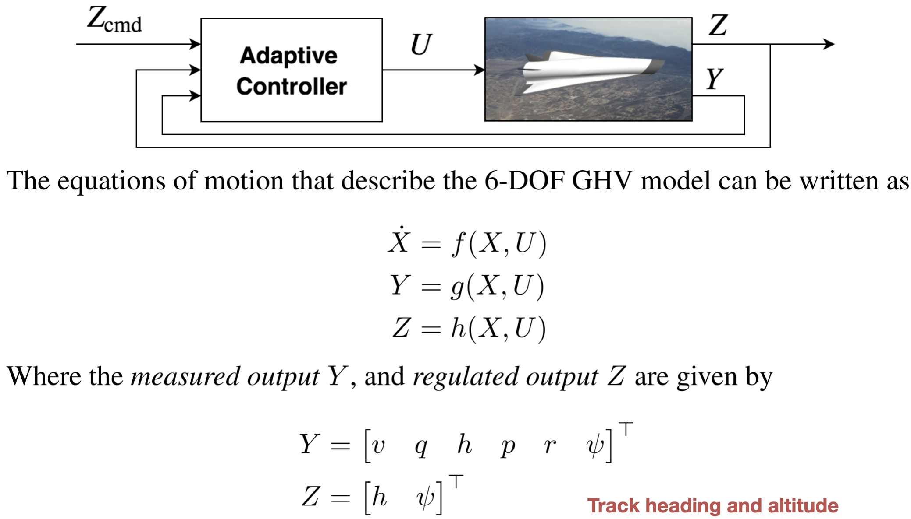
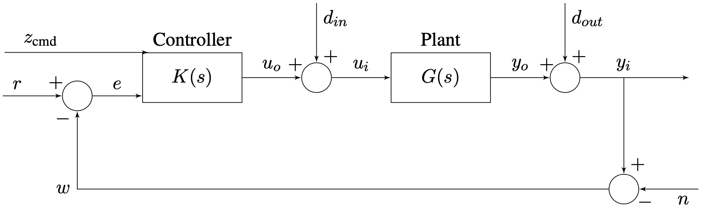
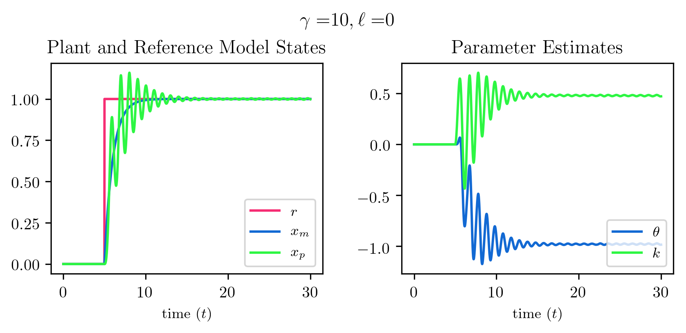
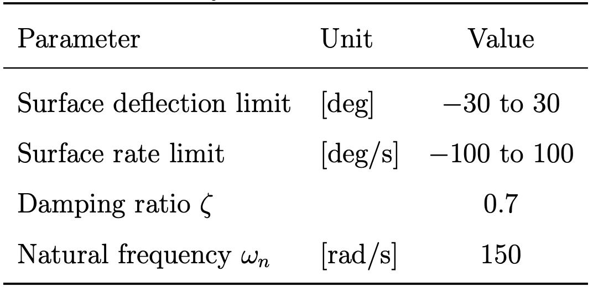

Blue Origin Interview
March 7, 2023
About Me
- Mechanical/aerospace engineer by training
- Expert problem solver, with experience across a wide breadth of technical domains
- Experienced hands-on manager, leading teams to excellent outcomes regardless of technology stack

Significant Accomplishments
- Completing a PhD in mechanical engineering at MIT
- Developed new heirarchical approach to adaptive output feedback control
- Learned fundamental skills to think deeply, solve difficult problems, and communicate
- Founding, running, and selling Humon
- Hardware/software engineering, signal processing and data science, manufacturing, IP, supply chain, and more
- Learned a career’s worth of skills in 3.5 years
- Leading R&D at Whoop
- Hired and led a team of high-performing, multidisciplinary engineers and scientists
- Drove excellent outcomes while maintaining leading eNPS


Airbreathing Hypersonic Vehicles: Control Challenges
- Highly open-loop unstable
- Difficult to model
- Poor CFD models
- Limited wind tunnel data
- Complex shock interactions
- Must operate over a large flight envelope
- Largely varying dynamic pressure
- Aerodynamic and propulsive coupling
- Unstart can create abrupt changes to moments
- Unable to accurately obtain incidence angle measurements


Problem Statement
Design a controller for a hypersonic vehicle that can
- Accommodate high levels of model uncertainty
- Be robust to delays and unmodeled dynamics
- Enable agressive maneuvering
- Avoid unstart
- Ensure satisfactory command tracking

Plant Overview (1)

- The Generic Hypersonic Vehicle model is a variant of the HiFIRE 6 vehicle
- Equations of motion are standard flat-earth, nonlinear 12-state, 6-DOF equations
- No rotating turbomachinery terms or fuel sloshing, vehicle is a rigid body
| Parameter | Unit | Value |
|---|---|---|
| Gross weight | [lbm] | 1220.3 |
| Empty weight | [lbm] | 993.3 |
| Vehicle length | [in] | 175.9 |
| Span | [in] | 58.6 |
| Nose diameter | [in] | 11.0 |
| Tail diameter | [in] | 18.8 |

Plant Overview (2)

Control Problem


Simplified Model for Controller Synthesis


- The nonlinear equations of motion are linearized
- Modal analysis is use to reduce the linear model into several lower-order models
- The reduced linear models are further partitioned
- Uncertainty manifests itself as shown above (more on this later)
- Linearize the 12-state model about a desired trim condition
\[\begin{equation*} f(X,U)= f(X_{\text{eq}},U_{\text{eq}})+\left.\frac{\partial{}f(X,U)}{\partial{}X}\right|_{\text{eq}}x+\left.\frac{\partial{}f(X,U)}{\partial{}U}\right|_{\text{eq}}u+\epsilon \end{equation*}\]
- Validate linearity assumption
- Decouple 12-state linear model into several lower-order models
- Velocity, longitudinal, lateral-directional dynamics
- Further simplify models by removing navigation and orientation dynamics
- These three linear inner-loop subsystems are represented by linear models
\[\begin{equation*} \begin{split} \dot{x}_{p}(t)&=A_{p}x_{p}(t)+B_{p}u(t) \\ y_{p}(t)&=C_{p}x_{p}(t) \\ z_{p}(t)&=C_{pz}x_{p}(t)+D_{pz}u(t) \end{split} \end{equation*}\]
- The sensitivity matrix allows comparison of modes across state variables whose units differ

- The model exhibits decoupling between longitudinal, lateral-directional, dynamics

Inner-Loop Plant Models

- Introduce the linear uncertain plant model
\[\begin{equation*} \begin{split} \dot{x}(t)&=(A+B\Psi^{\top})x(t)+B\Lambda u(t)+B_{\text{cmd}}z_{\text{cmd}}(t) \\ y(t)&=Cx(t) \end{split} \end{equation*}\]
where \(\Lambda\) and \(\Psi\) are unknown
- This model adds integral control on the regulated output and includes model uncertainty
- Some comments
- Uncertainty enters through the columns of \(B\)
- No direct feedthrough of the control to output
Model Construction
- That there is no feedthrough of the control to the output is common in aerospace systems
- Control inputs create moments and angular velocities are measured
- One integration between input and output
- Direct feedthrough, as occurs when measuring linear accelerations, can be accommodated using fairly trivial modification to control design to follow
- Uncertainty entering through control channels is reasonable given the uncertainty in moment coefficients in \(A\)
\[\begin{equation*} \begin{bmatrix} \dot{\alpha} \\ \dot{q} \end{bmatrix}= \begin{bmatrix} 0 & 1 \\ M_{\alpha} & M_{q} \end{bmatrix} \begin{bmatrix} \alpha \\ q \end{bmatrix}+ \begin{bmatrix} 0 \\ M_{\delta_{e}} \end{bmatrix} \delta_{e} \end{equation*}\]
Model Construction
\[\begin{align} \dot{x}_{p}(t) &= A_{p}x_{p}(t) + B_{p}\bigr(\Lambda u(t) + \Psi_{p}^{\top}x_{p}(t)\bigr) \\ y_{p}(t) &= C_{p}x_{p}(t) \\ z_{p}(t) &= C_{pz}x_{p}(t) + D_{pz}\bigr(\Lambda u(t) + \Psi_{p}^{\top}x_{p}(t)\bigr) \\ \end{align}\]
\[\begin{equation*} \begin{gathered} A= \begin{bmatrix} A_{p} & 0_{n_{p}\times n_{e}} \\ -C_{pz} & 0_{n_{e}\times n_{e}} \end{bmatrix} \quad B= \begin{bmatrix} B_{p} \\ -D_{pz} \end{bmatrix} \quad B_{\text{cmd}}= \begin{bmatrix} 0_{n_{p}\times m} \\ I_{n_{e}\times n_{e}} \end{bmatrix} \\ C= \begin{bmatrix} C_{p} & 0_{\ell\times n_{e}} \\ 0_{n_{e}\times n_{p}} & I_{n_{e}\times n_{e}} \end{bmatrix} \quad C_{z} = \begin{bmatrix} C_{pz} & 0 \end{bmatrix} \end{gathered} \end{equation*}\]
\[\begin{equation*} \begin{split} \dot{x}(t)&=(A+B\Psi^{\top})x(t)+B\Lambda u(t)+B_{\text{cmd}}z_{\text{cmd}}(t) \\ y(t)&=Cx(t) \end{split} \end{equation*}\]
Inner-Loop Controller Block Diagram

- In addition to needing \(\boldsymbol{\color{red}L}\) for closed-loop stability, it provides additional benefits for the adaptive system
Robustness Properties
- The choice of \(\boldsymbol{\color{red}S_{\color{red}1}}\) and \(\boldsymbol{\color{red}L}\) also affects robustness properties of the underlying LQG-like controller


Comments on Closed-Loop Reference Model
- The closed-loop reference model provides beneficial properties, especially with regards to transient behavior
- The tuning of \(\boldsymbol{\color{red}L}\) through the many available degrees of freedom enables good transients to be achieved
- CRM also applicable in the case of state feedback


Outer-Loop Controller Block Diagram (2)
- \(\boldsymbol{\color{red}S_{\color{red}g}}\) eliminates error from outer-loop coupling
- \(\boldsymbol{\color{red}L_{\color{red}y}}\) modifies the outer-loop reference model due to uncertainty
- \(\boldsymbol{\color{red}L_{\color{red}g}}\) provides stability of the outer-loop reference model
- Proof of stability not provided here

Outer-Loop Controller with Limiter
- This architecture exposes the inner-loop commands (e.g. \(V_{T}\) , \(p\) , \(q\) ) allowing them to be limited by the outer-loop controller
- The limiter is a function of the reference model state, allowing unmeasurable states to be implicitly limited
- Stability with the limiter is guaranteed
- Proof of stability not provided here

Simulation Results (1)

- Actuator dynamics were included in the simulation model
- Controllers were simulated in discrete time at 100 Hz
- Sensor noise and dynamics, and additional input delays were investigated as well
Actuator Dynamics


Comments on the Closed-Loop System
\[\begin{equation*} \begin{split} \dot{x}(t)&=(A+B\Psi^{\top})x(t)+B\Lambda u(t)+B_{\text{cmd}}z_{\text{cmd}}(t) \\ y(t)&=Cx(t) \\ \dot{x}_{m}(t)&=A_{m}x_{m}(t)+B_{\text{cmd}} r(t)+\boldsymbol{\color{red}L}(y_{m}(t)-y(t)) \\ y_{m}(t)&=Cx_{m}(t) \\ u(t)&=(K+\Theta(t))^{\top}x_{m}(t) \\ \dot{\Theta}(t)&=-\Gamma x_{m}(t)(\boldsymbol{\color{red}S_{\color{red}1}}e_{y}(t))^{\top}\text{sgn}(\Lambda) \end{split} \end{equation*}\]